1.3.2. Numerical operations on arrays¶
Section contents
1.3.2.1. Elementwise operations¶
With scalars:
>>> a = np.array([1, 2, 3, 4])
>>> a + 1
array([2, 3, 4, 5])
>>> 2**a
array([ 2, 4, 8, 16])
All arithmetic operates elementwise:
>>> b = np.ones(4) + 1
>>> a - b
array([-1., 0., 1., 2.])
>>> a * b
array([ 2., 4., 6., 8.])
>>> j = np.arange(5)
>>> 2**(j + 1) - j
array([ 2, 3, 6, 13, 28])
Warning
Array multiplication is not matrix multiplication:
>>> c = np.ones((3, 3))
>>> c * c # NOT matrix multiplication!
array([[ 1., 1., 1.],
[ 1., 1., 1.],
[ 1., 1., 1.]])
Note
Matrix multiplication:
>>> c.dot(c)
array([[ 3., 3., 3.],
[ 3., 3., 3.],
[ 3., 3., 3.]])
Comparisons:
>>> a = np.array([1, 2, 3, 4])
>>> b = np.array([4, 2, 2, 4])
>>> a == b
array([False, True, False, True], dtype=bool)
>>> a > b
array([False, False, True, False], dtype=bool)
Logical operations:
>>> a = np.array([1, 1, 0, 0], dtype=bool)
>>> b = np.array([1, 0, 1, 0], dtype=bool)
>>> np.logical_or(a, b)
array([ True, True, True, False], dtype=bool)
>>> np.logical_and(a, b)
array([ True, False, False, False], dtype=bool)
Shape mismatches:
>>> a = np.arange(4)
>>> a
array([0, 1, 2, 3])
>>> a + np.array([1, 2])
Traceback (most recent call last):
File "<stdin>", line 1, in <module>
ValueError: shape mismatch: objects cannot be broadcast to a single shape
‘Broadcast’? We’ll return to that later.
Transposition:
>>> a = np.triu(np.ones((3, 3)), 1) # see help(np.triu)
>>> a
array([[ 0., 1., 1.],
[ 0., 0., 1.],
[ 0., 0., 0.]])
>>> a.T
array([[ 0., 0., 0.],
[ 1., 0., 0.],
[ 1., 1., 0.]])
Note
Linear algebra
The sub-module np.linalg implements basic linear algebra, such as solving linear systems, singular value decomposition, etc. However, it is not guaranteed to be compiled using efficient routines, and thus we recommend the use of scipy.linalg, as detailed in section Linear algebra operations: scipy.linalg
Exercise
Generate arrays [2**0, 2**1, 2**2, 2**3, 2**4] and a_j = 2^(3*j) - j
1.3.2.2. Basic reductions¶
Computing sums:
>>> x = np.array([1, 2, 3, 4])
>>> np.sum(x)
10
>>> x.sum()
10

Sum by rows and by columns:
>>> x = np.array([[1, 1], [2, 2]])
>>> x
array([[1, 1],
[2, 2]])
>>> x.sum(axis=0) # columns (first dimension)
array([3, 3])
>>> x[:, 0].sum(), x[:, 1].sum()
(3, 3)
>>> x.sum(axis=1) # rows (second dimension)
array([2, 4])
>>> x[0, :].sum(), x[1, :].sum()
(2, 4)
Same idea in higher dimensions:
>>> x = np.random.rand(2, 2, 2)
>>> x.sum(axis=2)[0, 1]
1.14764...
>>> x[0, 1, :].sum()
1.14764...
Other reductions — works the same way (and take axis=)
Statistics:
>>> x = np.array([1, 2, 3, 1]) >>> y = np.array([[1, 2, 3], [5, 6, 1]]) >>> x.mean() 1.75 >>> np.median(x) 1.5 >>> np.median(y, axis=-1) # last axis array([ 2., 5.])
>>> x.std() # full population standard dev. 0.82915619758884995
Extrema:
>>> x = np.array([1, 3, 2]) >>> x.min() 1 >>> x.max() 3
>>> x.argmin() # index of minimum 0 >>> x.argmax() # index of maximum 1
Logical operations:
>>> np.all([True, True, False]) False >>> np.any([True, True, False]) True
Note
Can be used for array comparisons:
>>> a = np.zeros((100, 100)) >>> np.any(a != 0) False >>> np.all(a == a) True
>>> a = np.array([1, 2, 3, 2]) >>> b = np.array([2, 2, 3, 2]) >>> c = np.array([6, 4, 4, 5]) >>> ((a <= b) & (b <= c)).all() True
... and many more (best to learn as you go).
Example: data statistics
Data in populations.txt describes the populations of hares and lynxes (and carrots) in northern Canada during 20 years.
We can first plot the data:
>>> data = np.loadtxt('data/populations.txt')
>>> year, hares, lynxes, carrots = data.T # trick: columns to variables
>>> from matplotlib import pyplot as plt
>>> plt.axes([0.2, 0.1, 0.5, 0.8])
<matplotlib.axes.Axes object at ...>
>>> plt.plot(year, hares, year, lynxes, year, carrots)
[<matplotlib.lines.Line2D object at ...>, ...]
>>> plt.legend(('Hare', 'Lynx', 'Carrot'), loc=(1.05, 0.5))
<matplotlib.legend.Legend object at ...>
[source code, hires.png, pdf]
{kind=link}

The mean populations over time:
>>> populations = data[:, 1:]
>>> populations.mean(axis=0)
array([ 34080.95238095, 20166.66666667, 42400. ])
The sample standard deviations:
>>> populations.std(axis=0)
array([ 20897.90645809, 16254.59153691, 3322.50622558])
Which species has the highest population each year?
>>> np.argmax(populations, axis=1)
array([2, 2, 0, 0, 1, 1, 2, 2, 2, 2, 2, 2, 0, 0, 0, 1, 2, 2, 2, 2, 2])
Example: diffusion simulation using a random walk algorithm

What is the typical distance from the origin of a random walker after t left or right jumps?

>>> n_stories = 1000 # number of walkers
>>> t_max = 200 # time during which we follow the walker
We randomly choose all the steps 1 or -1 of the walk:
>>> t = np.arange(t_max)
>>> steps = 2 * np.random.random_integers(0, 1, (n_stories, t_max)) - 1
>>> np.unique(steps) # Verification: all steps are 1 or -1
array([-1, 1])
We build the walks by summing steps along the time:
>>> positions = np.cumsum(steps, axis=1) # axis = 1: dimension of time
>>> sq_distance = positions**2
We get the mean in the axis of the stories:
>>> mean_sq_distance = np.mean(sq_distance, axis=0)
Plot the results:
>>> plt.figure(figsize=(4, 3))
<matplotlib.figure.Figure object at ...>
>>> plt.plot(t, np.sqrt(mean_sq_distance), 'g.', t, np.sqrt(t), 'y-')
[<matplotlib.lines.Line2D object at ...>, <matplotlib.lines.Line2D object at ...>]
>>> plt.xlabel(r"$t$")
<matplotlib.text.Text object at ...>
>>> plt.ylabel(r"$\sqrt{\langle (\delta x)^2 \rangle}$")
<matplotlib.text.Text object at ...>
[source code, hires.png, pdf]
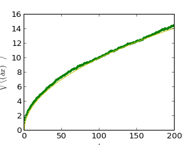{kind=link}
The RMS distance grows as the square root of the time!
1.3.2.3. Broadcasting¶
Basic operations on numpy arrays (addition, etc.) are elementwise
This works on arrays of the same size.
Nevertheless, It’s also possible to do operations on arrays of differentsizes if Numpy can transform these arrays so that they all havethe same size: this conversion is called broadcasting.
The image below gives an example of broadcasting:

Let’s verify:
>>> a = np.tile(np.arange(0, 40, 10), (3, 1)).T
>>> a
array([[ 0, 0, 0],
[10, 10, 10],
[20, 20, 20],
[30, 30, 30]])
>>> b = np.array([0, 1, 2])
>>> a + b
array([[ 0, 1, 2],
[10, 11, 12],
[20, 21, 22],
[30, 31, 32]])
An useful trick:
>>> a = np.arange(0, 40, 10)
>>> a.shape
(4,)
>>> a = a[:, np.newaxis] # adds a new axis -> 2D array
>>> a.shape
(4, 1)
>>> a
array([[ 0],
[10],
[20],
[30]])
>>> a + b
array([[ 0, 1, 2],
[10, 11, 12],
[20, 21, 22],
[30, 31, 32]])
We have already used broadcasting without knowing it!:
>>> a = np.ones((4, 5))
>>> a[0] = 2 # we assign an array of dimension 0 to an array of dimension 1
>>> a
array([[ 2., 2., 2., 2., 2.],
[ 1., 1., 1., 1., 1.],
[ 1., 1., 1., 1., 1.],
[ 1., 1., 1., 1., 1.]])
Broadcasting seems a bit magical, but it is actually quite natural to use it when we want to solve a problem whose output data is an array with more dimensions than input data.
Example
Let’s construct an array of distances (in miles) between cities of Route 66: Chicago, Springfield, Saint-Louis, Tulsa, Oklahoma City, Amarillo, Santa Fe, Albuquerque, Flagstaff and Los Angeles.
>>> mileposts = np.array([0, 198, 303, 736, 871, 1175, 1475, 1544,
... 1913, 2448])
>>> distance_array = np.abs(mileposts - mileposts[:, np.newaxis])
>>> distance_array
array([[ 0, 198, 303, 736, 871, 1175, 1475, 1544, 1913, 2448],
[ 198, 0, 105, 538, 673, 977, 1277, 1346, 1715, 2250],
[ 303, 105, 0, 433, 568, 872, 1172, 1241, 1610, 2145],
[ 736, 538, 433, 0, 135, 439, 739, 808, 1177, 1712],
[ 871, 673, 568, 135, 0, 304, 604, 673, 1042, 1577],
[1175, 977, 872, 439, 304, 0, 300, 369, 738, 1273],
[1475, 1277, 1172, 739, 604, 300, 0, 69, 438, 973],
[1544, 1346, 1241, 808, 673, 369, 69, 0, 369, 904],
[1913, 1715, 1610, 1177, 1042, 738, 438, 369, 0, 535],
[2448, 2250, 2145, 1712, 1577, 1273, 973, 904, 535, 0]])

A lot of grid-based or network-based problems can also use broadcasting. For instance, if we want to compute the distance from the origin of points on a 10x10 grid, we can do:
>>> x, y = np.arange(5), np.arange(5)
>>> distance = np.sqrt(x ** 2 + y[:, np.newaxis] ** 2)
>>> distance
array([[ 0. , 1. , 2. , 3. , 4. ],
[ 1. , 1.41421356, 2.23606798, 3.16227766, 4.12310563],
[ 2. , 2.23606798, 2.82842712, 3.60555128, 4.47213595],
[ 3. , 3.16227766, 3.60555128, 4.24264069, 5. ],
[ 4. , 4.12310563, 4.47213595, 5. , 5.65685425]])
Or in color::
>>> plt.pcolor(distance) # doctest: +ELLIPSIS
<matplotlib.collections.PolyCollection object at ...>
>>> plt.colorbar() # doctest: +ELLIPSIS
<matplotlib.colorbar.Colorbar instance at ...>
>>> plt.axis('equal')
(0.0, 200.0, 0.0, 16.0)
[source code, hires.png, pdf]
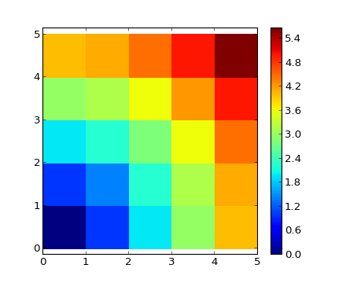{kind=link}
Remark : the numpy.ogrid function allows to directly create vectors x and y of the previous example, with two “significant dimensions”:
>>> x, y = np.ogrid[0:5, 0:5]
>>> x, y
(array([[0],
[1],
[2],
[3],
[4]]), array([[0, 1, 2, 3, 4]]))
>>> x.shape, y.shape
((5, 1), (1, 5))
>>> distance = np.sqrt(x ** 2 + y ** 2)
So, np.ogrid is very useful as soon as we have to handle computations on a grid. On the other hand, np.mgrid directly provides matrices full of indices for cases where we can’t (or don’t want to) benefit from broadcasting:
>>> x, y = np.mgrid[0:4, 0:4]
>>> x
array([[0, 0, 0, 0],
[1, 1, 1, 1],
[2, 2, 2, 2],
[3, 3, 3, 3]])
>>> y
array([[0, 1, 2, 3],
[0, 1, 2, 3],
[0, 1, 2, 3],
[0, 1, 2, 3]])
However, in practice, this is rarely needed!
1.3.2.4. Array shape manipulation¶
1.3.2.4.1. Flattening¶
>>> a = np.array([[1, 2, 3], [4, 5, 6]])
>>> a.ravel()
array([1, 2, 3, 4, 5, 6])
>>> a.T
array([[1, 4],
[2, 5],
[3, 6]])
>>> a.T.ravel()
array([1, 4, 2, 5, 3, 6])
Higher dimensions: last dimensions ravel out “first”.
1.3.2.4.2. Reshaping¶
The inverse operation to flattening:
>>> a.shape
(2, 3)
>>> b = a.ravel()
>>> b.reshape((2, 3))
array([[1, 2, 3],
[4, 5, 6]])
Creating an array with a different shape, from another array:
>>> a = np.arange(36)
>>> b = a.reshape((6, 6))
>>> b
array([[ 0, 1, 2, 3, 4, 5],
[ 6, 7, 8, 9, 10, 11],
[12, 13, 14, 15, 16, 17],
[18, 19, 20, 21, 22, 23],
[24, 25, 26, 27, 28, 29],
[30, 31, 32, 33, 34, 35]])
Or,
>>> b = a.reshape((6, -1)) # unspecified (-1) value is inferred
1.3.2.4.3. Views and copies¶
ndarray.reshape may return a view (cf help(np.reshape))), not a copy:
>>> b[0, 0] = 99
>>> a
array([99, 1, 2, 3, 4, 5, 6, 7, 8, 9, 10, 11, 12, 13, 14, 15, 16,
17, 18, 19, 20, 21, 22, 23, 24, 25, 26, 27, 28, 29, 30, 31, 32, 33,
34, 35])
Beware: reshape may also return a copy!
>>> a = np.zeros((3, 2))
>>> b = a.T.reshape(3*2)
>>> b[0] = 9
>>> a
array([[ 0., 0.],
[ 0., 0.],
[ 0., 0.]])
To understand, see the section on the memory layout of an array below.
1.3.2.4.4. Dimension shuffling¶
>>> a = np.arange(4*3*2).reshape(4, 3, 2)
>>> a.shape
(4, 3, 2)
>>> a[0, 2, 1]
5
>>> b = a.transpose(1, 2, 0)
>>> b.shape
(3, 2, 4)
>>> b[2, 1, 0]
5
Also creates a view:
>>> b[2, 1, 0] = -1
>>> a[0, 2, 1]
-1
1.3.2.4.5. Resizing¶
Size of an array can be changed with ndarray.resize:
>>> a = np.arange(4)
>>> a.resize((8,))
>>> a
array([0, 1, 2, 3, 0, 0, 0, 0])
However, it must not be referred to somewhere else:
>>> b = a
>>> a.resize((4,))
...
ValueError: cannot resize an array references or is referenced
by another array in this way. Use the resize function
1.3.2.4.6. Some examples of real-world use cases¶
Case 2.a: Calling (legacy) Fortran code
Shape-preserving functions with elementwise non-Python routines. For instance, Fortran
! 2_a_fortran_module.f90
subroutine some_function(n, a, b)
integer :: n
double precision, dimension(n), intent(in) :: a
double precision, dimension(n), intent(out) :: b
b = a + 1
end subroutine some_function
We can use f2py to wrap this fortran code in Python: f2py -c -m fortran_module 2_a_fortran_module.f90
import numpy as np
import fortran_module
def some_function(input):
"""
Call a Fortran routine, and preserve input shape
"""
input = np.asarray(input)
# fortran_module.some_function() takes 1-D arrays!
output = fortran_module.some_function(input.ravel())
return output.reshape(input.shape)
print some_function(np.array([1, 2, 3]))
print some_function(np.array([[1, 2], [3, 4]]))
# ->
# [ 2. 3. 4.]
# [[ 2. 3.]
# [ 4. 5.]]
Case 2.b: Block matrices and vectors (and tensors)
Vector space: quantum level 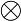 spin
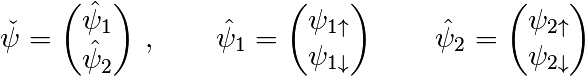
In short: for block matrices and vectors, it can be useful to preserve the block structure.
In Numpy:
>>> psi = np.zeros((2, 2)) # dimensions: level, spin
>>> psi[0, 1] # <-- psi_{1,downarrow}
0.0
Linear operators on such block vectors have similar block structure:
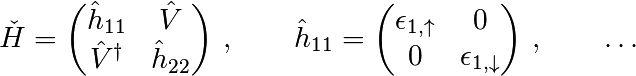
>>> H = np.zeros((2, 2, 2, 2)) # dimensions: level1, level2, spin1, spin2
>>> h_11 = H[0,0,:,:]
>>> V = H[0,1]
Doing the matrix product: get rid of the block structure, do the 4x4 matrix product, then put it back
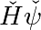
>>> def mdot(operator, psi):
... return operator.transpose(0, 2, 1, 3).reshape(4, 4).dot(
... psi.reshape(4)).reshape(2, 2)
I.e., reorder dimensions first to level1, spin1, level2, spin2 and then reshape => correct matrix product.
1.3.2.5. Sorting data¶
Sorting along an axis:
>>> a = np.array([[4, 3, 5], [1, 2, 1]])
>>> b = np.sort(a, axis=1)
>>> b
array([[3, 4, 5],
[1, 1, 2]])
Note
Sorts each row separately!
In-place sort:
>>> a.sort(axis=1)
>>> a
array([[3, 4, 5],
[1, 1, 2]])
Sorting with fancy indexing:
>>> a = np.array([4, 3, 1, 2])
>>> j = np.argsort(a)
>>> j
array([2, 3, 1, 0])
>>> a[j]
array([1, 2, 3, 4])
Finding minima and maxima:
>>> a = np.array([4, 3, 1, 2])
>>> j_max = np.argmax(a)
>>> j_min = np.argmin(a)
>>> j_max, j_min
(0, 2)
1.3.2.6. Some exercises¶
Worked example: Framing Lena
Let’s do some manipulations on numpy arrays by starting with the famous image of Lena (http://www.cs.cmu.edu/~chuck/lennapg/). scipy provides a 2D array of this image with the scipy.lena function:
>>> from scipy import misc
>>> lena = misc.lena()
Note: In older versions of scipy, you will find lena under scipy.lena()
Here are a few images we will be able to obtain with our manipulations: use different colormaps, crop the image, change some parts of the image.

Let’s use the imshow function of pylab to display the image.
In [3]: import pylab as plt In [4]: lena = misc.lena() In [5]: plt.imshow(lena)
Lena is then displayed in false colors. A colormap must be specified for her to be displayed in grey.
In [6]: plt.imshow(lena, cmap=plt.cm.gray)
Create an array of the image with a narrower centering : for example, remove 30 pixels from all the borders of the image. To check the result, display this new array with imshow.
In [9]: crop_lena = lena[30:-30,30:-30]
We will now frame Lena’s face with a black locket. For this, we need to create a mask corresponding to the pixels we want to be black. The mask is defined by this condition (y-256)**2 + (x-256)**2
In [15]: y, x = np.ogrid[0:512,0:512] # x and y indices of pixels In [16]: y.shape, x.shape Out[16]: ((512, 1), (1, 512)) In [17]: centerx, centery = (256, 256) # center of the image In [18]: mask = ((y - centery)**2 + (x - centerx)**2) > 230**2 # circle
then we assign the value 0 to the pixels of the image corresponding to the mask. The syntax is extremely simple and intuitive:
In [19]: lena[mask] = 0 In [20]: plt.imshow(lena) Out[20]: <matplotlib.image.AxesImage object at 0xa36534c>
Follow-up: copy all instructions of this exercise in a script called lena_locket.py then execute this script in IPython with %run lena_locket.py.
Change the circle to an ellipsoid.
Exercise: Array manipulations
Form the 2-D array (without typing it in explicitly):
1 6 11 2 7 12 3 8 13 4 9 14 5 10 15
and generate a new array containing its 2nd and 4th rows.
Divide each column of the array:
>>> a = np.arange(25).reshape(5, 5)
elementwise with the array b = np.array([1., 5, 10, 15, 20]). (Hint: np.newaxis).
Harder one: Generate a 10 x 3 array of random numbers (in range [0,1]). For each row, pick the number closest to 0.5.
- Use abs and argsort to find the column j closest for each row.
- Use fancy indexing to extract the numbers. (Hint: a[i,j] – the array i must contain the row numbers corresponding to stuff in j.)
Exercise: Data statistics
The data in populations.txt:: describes the populations of hares and lynxes (and carrots) in northern Canada during 20 years:
>>> data = np.loadtxt('data/populations.txt')
>>> year, hares, lynxes, carrots = data.T # trick: columns to variables
>>> plt.axes([0.2, 0.1, 0.5, 0.8])
<matplotlib.axes.Axes object at ...>
>>> plt.plot(year, hares, year, lynxes, year, carrots)
[<matplotlib.lines.Line2D object at ...>, ...]
>>> plt.legend(('Hare', 'Lynx', 'Carrot'), loc=(1.05, 0.5))
<matplotlib.legend.Legend object at ...>
[source code, hires.png, pdf]
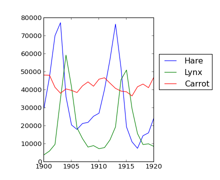{kind=link}
Computes and print, based on the data in populations.txt...
- The mean and std of the populations of each species for the years in the period.
- Which year each species had the largest population.
- Which species has the largest population for each year. (Hint: argsort & fancy indexing of np.array(['H', 'L', 'C']))
- Which years any of the populations is above 50000. (Hint: comparisons and np.any)
- The top 2 years for each species when they had the lowest populations. (Hint: argsort, fancy indexing)
- Compare (plot) the change in hare population (see help(np.gradient)) and the number of lynxes. Check correlation (see help(np.corrcoef)).
... all without for-loops.
Exercise: Crude integral approximations
Write a function f(a, b, c) that returns 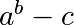. Form a 24x12x6 array containing its values in parameter ranges [0,1] x [0,1] x [0,1].
Approximate the 3-d integral
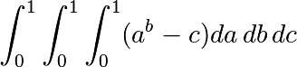
over this volume with the mean. The exact result is: 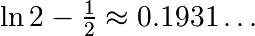 — what is your relative error?
(Hints: use elementwise operations and broadcasting. You can make np.ogrid give a number of points in given range with np.ogrid[0:1:20j].)
Reminder Python functions:
def f(a, b, c):
return some_result
Exercise: Mandelbrot set
[source code, hires.png, pdf]
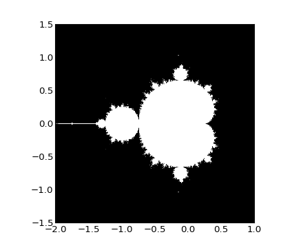Write a script that computes the Mandelbrot fractal. The Mandelbrot iteration:
N_max = 50 some_threshold = 50 c = x + 1j*y for j in xrange(N_max): z = z**2 + cPoint (x, y) belongs to the Mandelbrot set if
< some_threshold.
Do this computation by:
Construct a grid of c = x + 1j*y values in range [-2, 1] x [-1.5, 1.5]
Do the iteration
Form the 2-d boolean mask indicating which points are in the set
Save the result to an image with:
>>> import matplotlib.pyplot as plt >>> plt.imshow(mask.T, extent=[-2, 1, -1.5, 1.5]) <matplotlib.image.AxesImage object at ...> >>> plt.gray() >>> plt.savefig('mandelbrot.png')
{kind=link}
Exercise: Markov chain

Markov chain transition matrix P, and probability distribution on the states p:
- 0 <= P[i,j] <= 1: probability to go from state i to state j
- Transition rule: 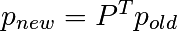
- all(sum(P, axis=1) == 1), p.sum() == 1: normalization
Write a script that works with 5 states, and:
- Constructs a random matrix, and normalizes each row so that it is a transition matrix.
- Starts from a random (normalized) probability distribution p and takes 50 steps => p_50
- Computes the stationary distribution: the eigenvector of P.T with eigenvalue 1 (numerically: closest to 1) => p_stationary
Remember to normalize the eigenvector — I didn’t...
- Checks if p_50 and p_stationary are equal to tolerance 1e-5
Toolbox: np.random.rand, .dot(), np.linalg.eig, reductions, abs(), argmin, comparisons, all, np.linalg.norm, etc.
1.3.2.7. Summary¶
What do you need to know to get started?
Know how to create arrays : array, arange, ones, zeros.
Know the shape of the array with array.shape, then use slicing to obtain different views of the array: array[::2], etc. Adjust the shape of the array using reshape or flatten it with ravel.
Obtain a subset of the elements of an array and/or modify their values with masks:
>>> a[a < 0] = 0
Know miscellaneous operations on arrays, such as finding the mean or max (array.max(), array.mean()). No need to retain everything, but have the reflex to search in the documentation (online docs, help(), lookfor())!!
For advanced use: master the indexing with arrays of integers, as well as broadcasting. Know more Numpy functions to handle various array operations.